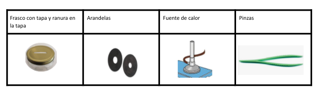
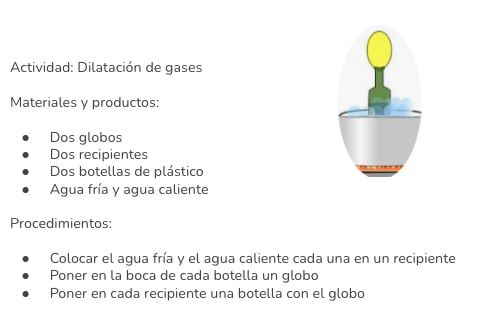
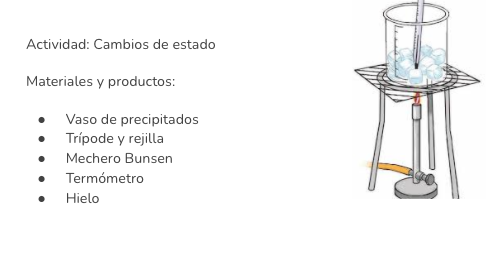
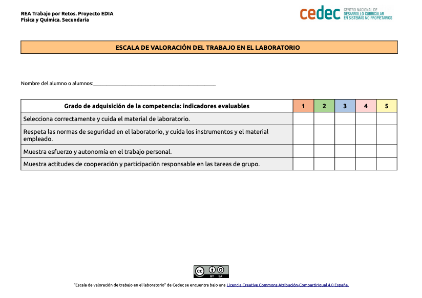
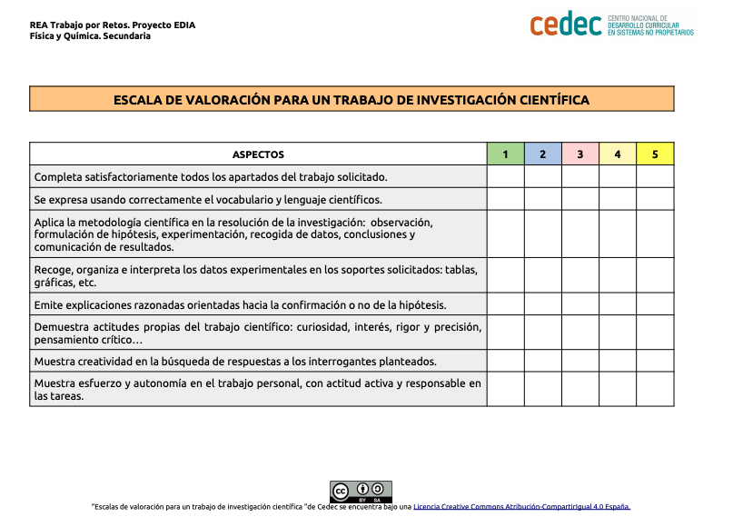

Si pensamos y buscamos información encontraríamos que los efectos del calor son el aumento de temperatura, los cambios de estado y la dilatación. Pero, ¿sabemos cómo se producen?

Vamos a investigar experimentalmente los efectos del calor, y realizar un informe con las conclusiones obtenidas
Investigando los efectos del calor
- Duración:
- Dos sesiones
- Agrupamiento:
- Individual, pequeño y gran grupo
En esta tarea vamos a investigar los efectos del calor, para ello realizaremos, una serie de actividades experimentales visitando los diferentes rincones del calor, compararemos resultados y realizaremos nuestro informe en el rincón de las conclusiones. Realizaremos las actividades en grupo, y, finalmente, comprobaremos nuestros conocimientos mediante un cuestionario individual.

Actividad 1: Los rincones de los efectos del calor
Vamos comprobar experimentalmente los efectos del calor, para ello vamos a visitar los rincones diferentes del calor. En cada rincón comprobaremos experimentalmente cada uno de los efectos del calor.
Realizaremos las actividades en pequeño y gran grupo durante una sesión y media

Vamos a visitar los siguientes rincones:
- Rincón de la dilatación I.
- Rincón de la dilatación II.
- Rincón de los cambios de estado.
- Rincón de las conclusiones.
Rincón de la dilatación I
Actividad: Dilatación de sólidos.
Materiales:
- Frasco con tapa y ranura en la tapa.
- Arandelas.
- Fuente de calor.
- Pinzas.

Procedimiento:
- Pasamos la arandela por la ranura del frasco
- Cogemos la arandela con las pinzas y calentamos la arandela durante un minuto y pasamos la arandela por la ranura
| Arandela fría | Arandela caliente |
| ¿Pasa la ranura?: |
¿Pasa La ranura?: |
|
Explicación: |
|
Rincón de la dilatación II
Actividad: Dilatación de los gases.
Materiales y productos:
- Dos globos.
- Dos recipientes.
- Dos botellas de plástico.
- Agua fría y caliente.
Procedimiento:
- Colocar el agua fría y el agua caliente cada una en un recipiente.
- Poner en la boca de cada botella el globo.
- Poner en cada recipiente una botella con el globo.

|
Recipiente con agua fría |
Recipiente con agua caliente |
|
Se introduce la botella con el globo. ¿Qué sucede? |
Se introduce la botella con el globo. ¿Qué sucede? |
|
Explicación: |
|
Rincón de los cambios de estado
Actividad: Cambios de estado.
Materiales y productos:
- Vaso de precipitados.
- Trípode y rejilla.
- Mechero Bunsen.
- Termómetro.
- Hielo.

Procedimiento:
- Se coloca el trípode con la rejilla encima del mechero.
- Se echa hielo picado en el recipiente para calentar (aproximadamente 1/3 del volumen del recipiente) y se introduce el termómetro.
- Se mide la temperatura, se anota en la tabla y se enciende el mechero.
- Removemos el agua – hielo de vez en cuando para homogeneizar la temperatura.
- Se mide y se anota la temperatura a intervalos de 1 minuto.
| Temperatura (ºC) | ||||||
| Tiempo (minutos) |
Realizamos la gráfica tiempo -temperatura, indicando el estado del agua en cada tramo.
Rincón de las conclusiones
Presentamos nuestro informe de las actividades realizadas
|
Rincones |
Conclusiones experimentales y teóricas |
Dificultades encontradas |
|
Dilatación I |
||
|
Dilatación II |
||
|
Cambios de estado |
Actividad 2: Comprobando nuestros conocimientos sobre el calor y sus efectos
Evaluación y reflexión
Una vez que hemos finalizado la tarea, es un buen momento para reflexionar en nuestro diario de aprendizaje. Algunas sugerencias pueden ser:
- ¿Qué he aprendido?
- ¿Qué me ha sorprendido más de todo el proceso? ¿Por qué?
- ¿He cambiado alguna idea previa? ¿Cuál?
- ¿Qué me ha resultado más difícil? ¿Por qué?
Evaluación
Para realizar la evaluación utilizaremos las siguientes escalas:
1.-Escala de valoración para un trabajo de laboratorio (descarga en formato editable odt y pdf)

2.-Escala de valoración para un trabajo investigación científica (Descargar en formato editable odt y pdf)
